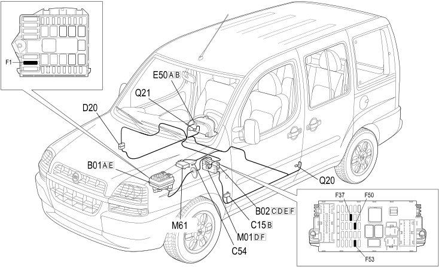

E7035 PRETENSIONERS - DESCRIPTION
- Path
- Electrical equipment > 1 ELECTRICAL FUNCTIONS > E70 VEHICLE ELECTRONIC SYSTEMS > E7035 PRETENSIONERS > E7035 PRETENSIONERS - DESCRIPTION
- Kind
- system description
- Applies to
- all engines; all production periods
- Interactive page
- https://sloeber94.github.io/elrnDB-fDbl/en/#/2583315
Applies to: all engines; all production periods
Location of components

COMPONENTS
Component code | Name | Assembly reference |
|---|---|---|
B1 | Engine compartment junction unit | |
B2 | Junction unit under dashboard | |
C15 | Facia earth, driver's side | - |
C54 | Pretensioner earth | - |
D20 | Dashboard/rear coupling | - |
E50 | Instrument panel | |
M1 | Body computer | |
M61 | Pretensioners control unit | - |
Q20 | Driver's seat belt pre-tensioner | |
Q21 | Front passenger seat belt pre-tensioner | - |